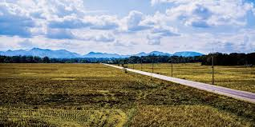

El clima templado es un tipo de clima que presenta temperaturas medias mensuales relativamente moderadas, con temperaturas superiores a los 22 °C en los meses más cálidos y superiores a los 0 °C en los meses más fríos. La media anual de las precipitaciones ronda entre los 600 mm y los 2000 mm.
Las regiones de clima templado suelen ubicarse entre las de clima tropical y las polares, es decir, en las zonas comprendidas entre las latitudes 30º y 45º norte y sur respectivamente. Son regiones en las que se producen las cuatro estaciones del año.
En el clima templado suele desarrollarse una amplia variedad de especies vegetales y animales, y es el tipo de clima más propicio para el desarrollo de actividades humanas. Las zonas de clima templado son las más pobladas del planeta.
Algunas características del clima templado son:
Sus temperaturas promedio varían entre los 0 y los 22 °C.
Sus precipitaciones promedio nunca superan los 2000 milímetros.
Presenta las cuatro estaciones bien diferenciadas.
Se ubica entre los 30 y los 45º de latitud norte y sur.
Sectores de Argentina, Uruguay y Estados Unidos en América, gran parte de Europa occidental, sectores de Angola y Zambia en África, sectores de India, Laos y China en Asia y el sur de Australia y Nueva Zelanda son algunas regiones del mundo que tienen clima templado.
Permite el desarrollo de una gran variedad de especies animales y de vegetación.
Fauna y flora del clima templado
Los Ángeles - clima templado
El clima templado presenta una vegetación abundante y variada.
El clima templado presenta condiciones adecuadas para el desarrollo de la flora y de la fauna. Entre sus principales características se destacan:
Respecto de la flora, existen diversos tipos de pastizales que, en muchos casos, fueron transformados en campos productivos. El clima templado y las abundantes lluvias propician el crecimiento de cultivos como la soja, el maíz y el trigo y árboles como el roble, la conífera y el alerce.
Respecto de la fauna, las zonas templadas con estación seca presentan diversas especies animales que se adaptaron a la migración para evadir las épocas más frías. Otras tienen la capacidad de hibernar para tolerar el invierno, como los osos, las ardillas y las zarigüeyas.
Algunos animales típicos del clima templado son: el alce, el lince, el ciervo de las pampas, el murciélago, el ratón de campo, el puma, el zorro, y aves como el pájaro cardenal y el águila.

TIPOS DE CLIMA TEMPLADO
CARACTERISTICAS PRINCIPALES
PRECIPITACIONES